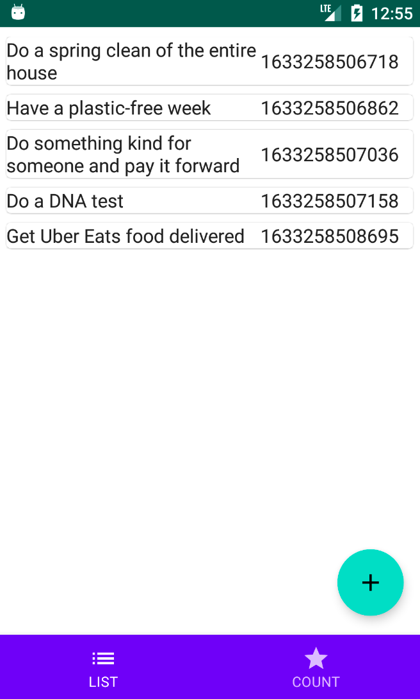
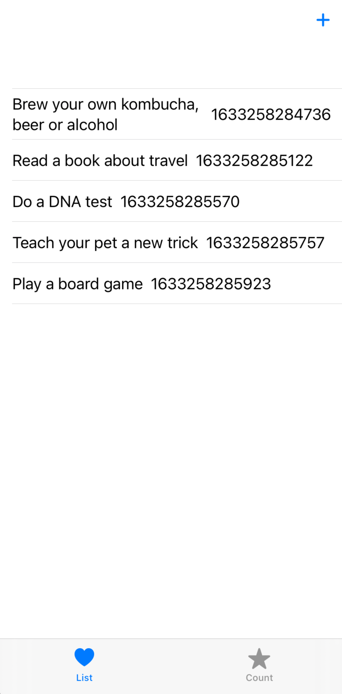
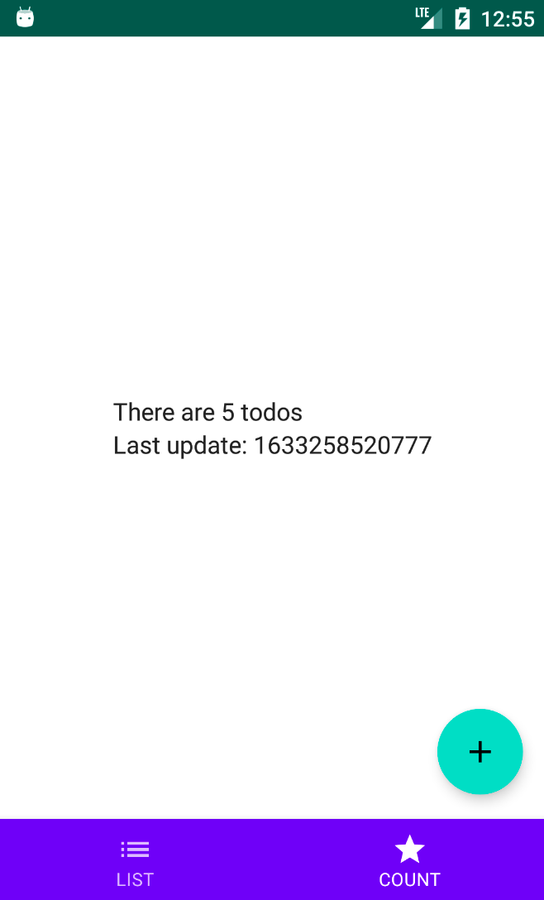
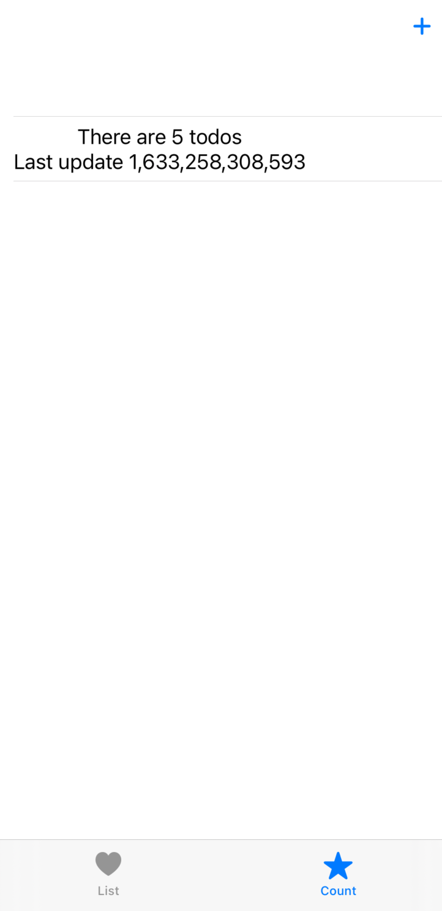
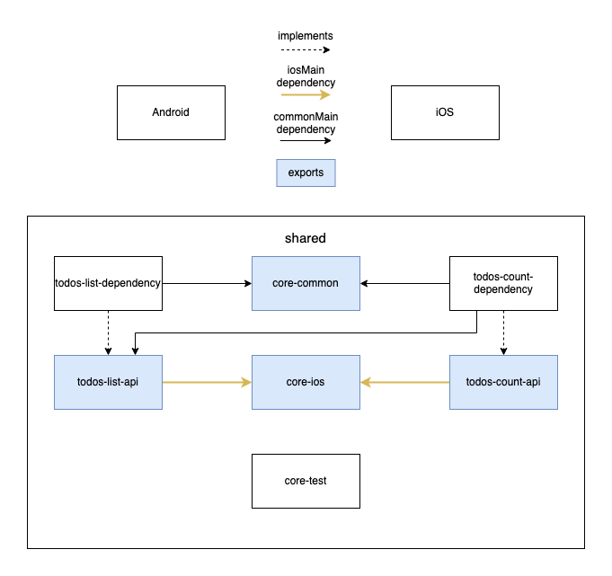
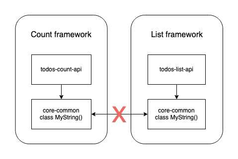

05.2023 Updated the GitHub repository (Kotlin 1.8.0)
Introduction
In this article I'll tackle the topic of Modularization in a Kotlin Multiplaform project. I wasn't able to find any up-to-date material on this subject, so I thought I would share the approach that we're using at FootballCo.
The project
For this article I've created a simple modularized Kotlin Multiplatform Mobile project which can be found on GitHub (it uses the KaMPKit starter). It consists of two screens, one shows a list of todos and another one which shows the number of todos. On both screens the todos can be added with a button.
The apps




Please excuse the lackluster UI, as it was not the focus of this article.
The modules

The Android and iOS platform use the shared module as an umbrella framework/library. The blue modules are the ones which will be exported through the shared module and the white ones are implementation details.
Modules like core-common or todos-list-api should be treated as part of the shared module API, because these modules are not used directly. The reason for that will be explained later.
There are two main groups of modules in the shared module:
- core modules - contain common classes, functions etc. which might are used in a lot of different modules
- feature modules - correspond to a feature of the app. In this example they are prefixed with todos, one for the list and one for the count
Each feature module can be broken down even further into two types:
- api module (blue - exported) - contains the interfaces and data structures of the given features. It contains the API that the clients (Android and iOS) use
- dependency module (white - internal) - contains the implementations for the corresponding api module. This module is basically the implementation details of the api module
The core modules
In this example there are three core modules:
- core-common - all the common entities which are used throughout the app. In this example it contains an interface for providing the current timestamp (with an internal implementation)
- core-ios - this module is only used by the iOS platform. It contains functions that help the Swift-Kotlin interop like the iOS wrappers (on which I've touched on in my previous article) or Koin helpers.
- core-test - contains the BaseTest class, and might contain other common text fixtures like API / Database fakes etc. More information about Testing can be found in my Testing on Kotlin Multiplatform article
The feature modules
As mentioned in the introduction, the app has two main features: showing a list of todos; and their count.
The features are contained in four modules (two api and two dependency modules):
- todos-list: retrieves the list of todos and adds random todo
- todos-count: retrieves the number of todos
Implementing gradle project modules
For the most part gradle project dependencies are used in the same way as in normal JVM projects with the difference that the dependencies are attached (implemented) in commonMain source set.
sourceSets["commonMain"].dependencies {
implementation(project(":kmm:todos:todos-count-api"))
implementation(project(":kmm:todos:todos-list-api"))
implementation(project(":kmm:core:core-common"))
implementation(Deps.Coroutines.common)
implementation(Deps.kotlinxDateTime)
implementation(Deps.koinCore)
implementation(Deps.kermit)
}Project dependencies can also be added to other source sets besides commonMain. For example the core-ios module should only be used on the iOS platform. Which means that it has to be added to the iosMain source set.
sourceSets["iosMain"].dependencies {
implementation(project(":kmm:core:core-ios"))
implementation(Deps.koinCore)
implementation(Deps.Coroutines.common) {
version {
strictly(Versions.coroutines)
}
}
}The iOS side of Kotlin modularization
Why do the API modules have a dependency on core-ios?
This is a small detour to explain the reasoning behind the aforementioned statement. Here's the module graph for reference:

The graph shows that the api modules use the core-ios module indicated by the yellow arrows. To make the life of the iOS developers easier, suspending functions and functions with a flow return type are wrapped to make their usage from swift easier.
There are multiple places to create these wrappers, however the one used in the example project is the following: the *-api modules contain and expose the wrappers. Doing it this way makes the interface implementation irrelevant, because the wrapper doesn't have to change when the interface implementation changes.
For example: the todos-counts-api module contains the interface for retrieving the todos counts inside the commonMain source set:
package co.touchlab.kmm.todos.count.api.domain
interface GetTodoCount {
operator fun invoke(): Flow<TodoCount>
}The above use case uses a Flow which is hard to use in swift. Because of this the following wrapper exists in iosMain (details about the wrappers can be found here):
package co.touchlab.kmm.todos.count.api.domain
class GetTodoCountIos(
private val getTodoCount: GetTodoCount
){
fun invoke(): FlowWrapper<TodoCount> =
FlowWrapper(
scope = CoroutineScope(SupervisorJob() + Dispatchers.Main),
flow = getTodoCount()
)
}The FlowWrapper offers functions which make collecting the flow much easier on iOS.
How are dependencies exposed to the iOS platform
Kotlin Multiplatform creates an Obj-C Framework which can be then used on the iOS platform. In this project, the framework is generated based on the shared module.
The shared module is the entry point for both the iOS and Android platform. It contains dependencies to all other modules, and dependency injection set up (explained in the following section).
To export the modules and regular Kotlin libraries, the build.gradle file has to attach the dependencies as api:
sourceSets["commonMain"].dependencies {
api(project(":kmm:core:core-common"))
api(project(":kmm:todos:todos-list-api"))
implementation(project(":kmm:todos:todos-list-dependency"))
api(project(":kmm:todos:todos-count-api"))
implementation(project(":kmm:todos:todos-count-dependency"))
...
}
sourceSets["iosMain"].dependencies {
api(project(":kmm:core:core-ios"))
...
}For iOS to see the exported modules and libraries, the framework configuration has to be updated:
cocoapods {
framework {
isStatic = false
export(project(":kmm:core:core-common"))
export(project(":kmm:core:core-ios"))
export(project(":kmm:todos:todos-list-api"))
export(project(":kmm:todos:todos-count-api"))
export(Deps.Coroutines.common)
export(Deps.koinCore)
}
}
Exposing multiple KMM frameworks
This is one of the biggest limitation of Kotlin Multiplatform currently, the iOS platform can't have granular access to Kotlin Modules. KMM generates a single umbrella framework which contains all the exported Kotlin classes (In this subsection when referring to classes I mean classes, objects, functions etc.).
It is possible to generate multiple KMM frameworks, but this will come with a lot of overhead in the form of a bigger binary because each framework will have duplicate Kotlin standard library classes.
If that wasn't bad enough, all the shared dependencies in the Kotlin modules will also be duplicated. In the example from this article, exporting the list and count modules as separate frameworks would duplicate all classes of the core-common module.
The biggest problem with this is that on iOS, the core-common classes in each framework are treated as different classes. This means that, for example, a shared data structure from core-common can't be used interchangeably between the list and count framework.

Creating a Swift class which uses MyString as a parameter would only be compatible only within the same framework. Passing in a MyString argument from a different framework would result in an incompatible type compilation error even though in Kotlin it is the same class.
Long story short, it might be possible to export multiple KMM frameworks, granted that they don't have/use the same modules. The following resources go more in-depth about the topic:


Testing
Because Kotlin Multiplatform lacks the support for mock framework, Test Doubles will need to be created by implementing interfaces. These Fake/Mock implementations will usually reside in the core-test module.
This approach increases maintainability and re-usability across the whole project. The Fake implementation details are contained in one class instead of spread out across multiple test files like it happens with mock frameworks.
Testing the shared module is even more important than tests for platform specific code. Because the code is used by multiple clients (platforms) it needs to work correctly, and what better way to do it than tests. If you'd like to learn more, checkout my Testing on Kotlin Multiplatform article.
Koin dependency injection
The Koin dependency graph is initialized inside the entry gradle module of Kotlin Multiplatform (the shared module). The initialization of the graph is done inside this function:
fun initKoin(appModule: Module): KoinApplication {
val koinApplication = startKoin {
modules(
appModule,
commonModule,
todoListDependencyModule,
todoCountDependencyModule
)
}
return koinApplication
}The appModule is the Koin module from the platforms (iOS and Android), for multiple modules, a vararg can be used.
For iOS there is an additional function to make providing dependencies easier:
fun initKoinIos(
appInfo: AppInfo,
): KoinApplication = initKoin(
module {
single { appInfo }
}
)From Swift the dependencies are passed in as parameters to this function, and then a Koin module is created from them and passed into the main initialization function.
Attaching gradle module classes to the dependency graph
The *-dependency gradle modules can just expose one Koin module which is then attached in the initKoin function.
val todoCountDependencyModule = module {
factory<GetTodoCount> { GetTodoCountFromList(get(), get()) }
}There is however one problem with this, the iOS platform uses a wrapper for the GetTodoCount class. This means that the wrapper also has to be introduced into the dependency graph.
As it was explained earlier, the api modules contain the iOS wrapper meaning that the *-api modules should add the wrappers to the dependency graph.
Either they are added to the initKoin function:
modules(
appModule,
commonModule,
todoListDependencyModule,
todoListApiModule,
todoCountDependencyModule
todoCountApiModule
)Or they can be added to their corresponding dependency module:
// commonMain
expect fun Module.countApiPlatformModule()
// androidMain
actual fun Module.countApiPlatformModule() { /* Empty */ }
// iosMain
actual fun Module.countApiPlatformModule() {
factory { GetTodoCountIos(get()) }
}val todoCountDependencyModule = module {
factory<GetTodoCount> { GetTodoCountFromList(get(), get()) }
countApiPlatformModule()
}There are definitely more ways to do this, but this example project uses the latter approach.
Injecting Fake / Mock implementations
Integration and UI tests should be as predictable as possible, that's why instead of making a real API call, a Fake implementation can be used.
I've written several articles about his topics, all of these approaches can be used on Kotlin Muliplatform (Ktor, Apollo GraphQL, SQLDelight).
The compilation speed
One of the biggest benefits of modularizing a project is faster compilation speed, because unchanged modules can be cached. On paper everything looks good, the Android app builds much faster when changing only some modules.
The issue is however with building the Kotlin/Native part of KMM, caused by the linkDebugFrameworkIos and linkReleaseFrameworkIos gradle tasks. These two tasks take up a lot of time, no matter if the change is in one or multiple module.
Here's an example, adding a todo in the app uses a predefined list:
private val tasks = listOf(
"Cook a cuisine from a different country",
...
"Paint a plant pot",
)
Changing the elements in the list results in the following compilation speeds:
There is a significant difference when comparing the two times, the Android build is 20+ times faster.
However, I've noticed that the shared module doesn't have to be built every time. When making small changes, building the Android app or running iOS tests in the changed module (maybe tests in a different module will work too) results in the changes being present in the iOS app.
I don't have this down to a science, but this definitely speeds up the feedback loop when building the iOS App. However, I still think that automated tests for the KMM logic will result in the best and fastest feedback loop, compared to running the Android / iOS app on every change.
Update: the compileKotlinIosArm64 and compileKotlinIosX64 speed up the compilation time a lot more.
Summary
I hope this article was helpful in explaining some Kotlin Multiplatform Mobile caveats and showing an example modularization strategy.
If you have used a different modularization strategy, or have some additional insights about the topic, please feel free to leave a comment about it.